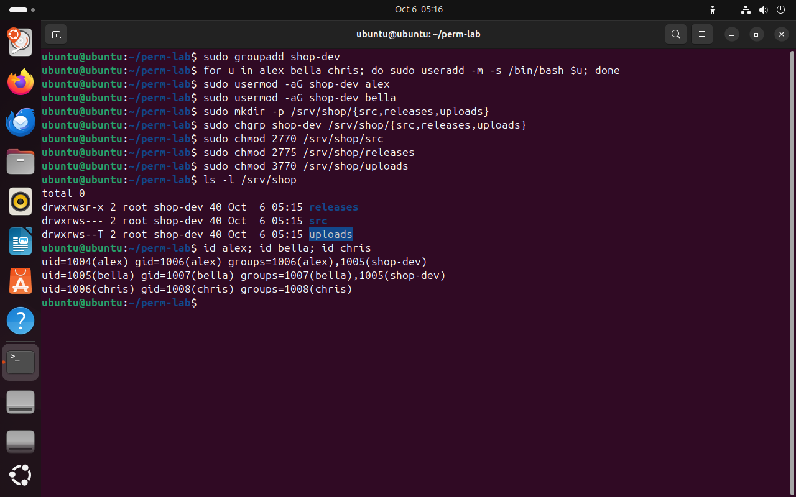
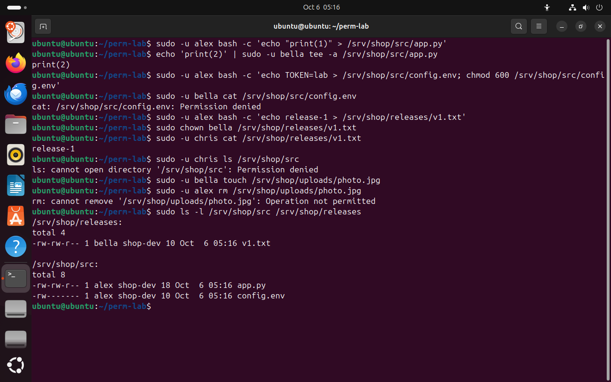
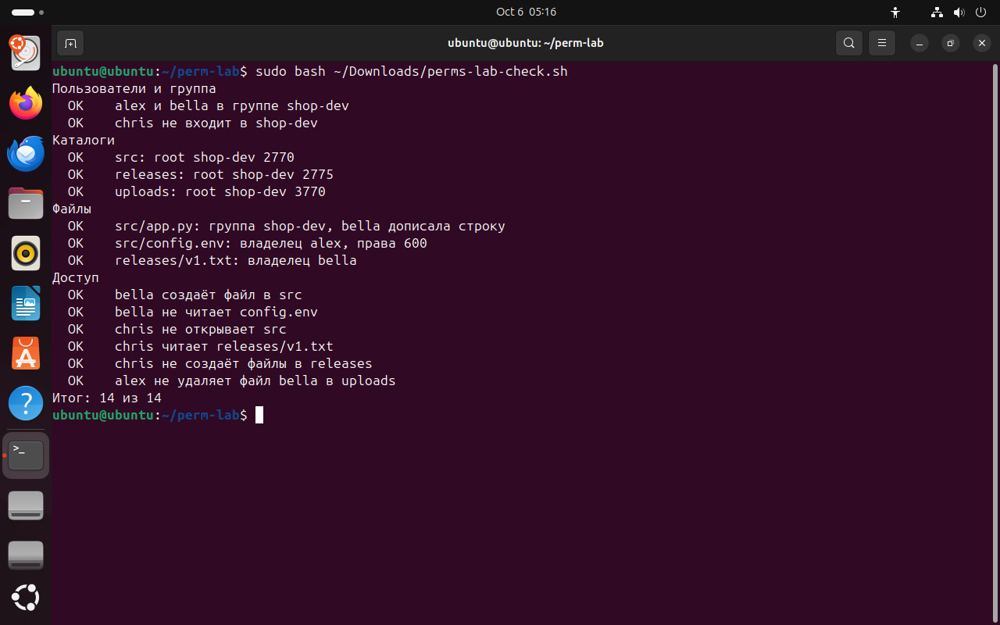
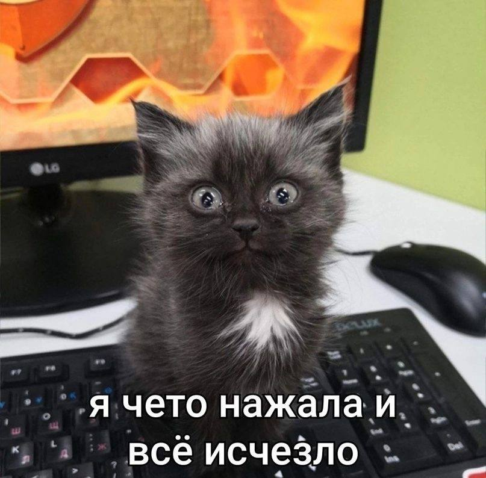

Часть 7 из 7
Практическая работа · Каталог проекта shop
В этой части настроим каталог проекта для команды из трёх человек: общий код, публичные сборки и общая папка загрузок, в которой нельзя удалить чужой файл. Результат проверим тестами доступа и скриптом.
7.1 Роли и каталоги
Команда делает интернет-магазин shop. Разработчики alex и bella вместе пишут код и выкладывают сборки, аналитик chris читает готовые сборки. Каталог uploads общий для разработчиков, но каждый удаляет только свои файлы. Каждая роль получает только нужные ей права — принцип минимальных привилегий из занятия 5.
- alex
разработчик: пишет код в
shop-devsrc, публикует сборки вreleases - bella
разработчица: работает в
shop-devsrcвместе с alex, загружает файлы вuploads - chris
аналитик: читает опубликованные сборки, к коду доступа не имеет
только личная группа - root
администратор: создаёт каталоги, меняет владельцев
через sudo
| Каталог | Владелец и группа | Права | Что получается |
|---|---|---|---|
/srv/shop/src | root · shop-dev | 2770 · drwxrws--- | разработчики читают и пишут, новые файлы получают группу shop-dev, остальным закрыто |
/srv/shop/releases | root · shop-dev | 2775 · drwxrwsr-x | разработчики публикуют, все остальные только читают |
/srv/shop/uploads | root · shop-dev | 3770 · drwxrws--T | разработчики кладут файлы, удалить может только владелец файла |
Файлы, созданные через sudo -u, получают маску вызвавшего пользователя: в Ubuntu это 0002, поэтому новые файлы в src открыты группе на запись. Секретный файл config.env закрывают явно, командой chmod 600.
7.2 Задания
Задания выполняются в учебной виртуальной машине от имени пользователя из группы sudo. Перед началом сделайте снимок состояния виртуальной машины. Выполняйте задания по порядку: каждое следующее использует каталоги и файлы предыдущего.
| № | Задание | Подсказка |
|---|---|---|
| 1 | Создайте группу shop-dev и учётные записи alex, bella, chris с домашними каталогами и оболочкой bash. Добавьте alex и bella в shop-dev. | groupadd, useradd -m -s, usermod -aG |
| 2 | Создайте каталоги /srv/shop/src, /srv/shop/releases, /srv/shop/uploads и назначьте им группу shop-dev. | mkdir -p и фигурные скобки, chgrp |
| 3 | Установите права по таблице: src — 2770, releases — 2775, uploads — 3770. Проверьте строки ls -l. | chmod; перед заданием переведите числа в буквы сами |
| 4 | От имени alex создайте src/app.py с одной строкой, от имени bella допишите в него вторую строку. | sudo -u alex bash -c '…', tee -a |
| 5 | От имени alex создайте src/config.env и закройте его правами 600. Убедитесь, что bella его не читает. | chmod 600 внутри bash -c |
| 6 | От имени alex опубликуйте releases/v1.txt и передайте файл во владение bella. | sudo chown |
| 7 | Проверьте доступ chris: читает releases/v1.txt, не открывает src, не создаёт файлы в releases. | sudo -u chris |
| 8 | От имени bella положите файл в uploads и убедитесь, что alex не может его удалить. | sticky-бит |
| 9 | Запустите проверку sudo bash ~/Downloads/perms-lab-check.sh и добейтесь результата 14 из 14. | скрипт в материалах занятия |
sudo groupadd shop-devчто делает
Что делает команда. Создаёт группу разработчиков shop-dev.
По частям:
sudo- выполнить команду от имени другого пользователя, по умолчанию root
groupadd- создать группу
shop-dev- имя новой группы
for u in alex bella chris; do sudo useradd -m -s /bin/bash $u; done# три учётные записичто делает
Что делает команда. Создаёт три учётные записи с домашними каталогами и оболочкой bash.
По частям:
for u in alex bella chris- цикл: переменная u по очереди принимает значения alex, bella, chris
do … done- команды между do и done выполняются для каждого значения
sudo useradd- создать учётную запись с правами root
-m- создать домашний каталог
-s /bin/bash- оболочка после входа: /bin/bash
$u- вместо $u оболочка подставит текущее имя из списка
sudo usermod -aG shop-dev alexчто делает
Что делает команда. Добавляет alex в группу shop-dev, сохраняя остальные группы.
По частям:
sudo- выполнить команду от имени другого пользователя, по умолчанию root
usermod- изменить учётную запись
-a- добавить к имеющимся группам
-G- дополнительные группы; без -a прежний список заменяется целиком
shop-dev- группа
alex- чью запись изменить
sudo usermod -aG shop-dev bellaчто делает
Что делает команда. Добавляет bella в группу shop-dev.
По частям:
sudo- выполнить команду от имени другого пользователя, по умолчанию root
usermod- изменить учётную запись
-a- добавить к имеющимся группам
-G- дополнительные группы; без -a прежний список заменяется целиком
shop-dev- группа
bella- чью запись изменить
sudo mkdir -p /srv/shop/{src,releases,uploads}что делает
Что делает команда. Создаёт каталог проекта и три подкаталога.
По частям:
sudo- выполнить команду от имени другого пользователя, по умолчанию root
mkdir- создать каталог
-p- создать и промежуточные каталоги; без ошибки, если каталог уже есть
/srv/shop/{src,releases,uploads}- какой каталог создать (абсолютный путь; фигурные скобки: оболочка подставит каждый вариант)
sudo chgrp shop-dev /srv/shop/{src,releases,uploads}что делает
Что делает команда. Отдаёт три подкаталога группе shop-dev.
По частям:
sudo- выполнить команду от имени другого пользователя, по умолчанию root
chgrp- сменить группу файла
shop-dev- новая группа
/srv/shop/{src,releases,uploads}- какой файл или каталог (абсолютный путь; фигурные скобки: оболочка подставит каждый вариант)
sudo chmod 2770 /srv/shop/srcчто делает
Что делает команда. Ставит каталогу кода setgid и права rwx владельцу и группе.
По частям:
sudo- выполнить команду от имени другого пользователя, по умолчанию root
chmod- изменить права доступа
2770- первая цифра 2 — бит setgid; права числом: 7 — rwx владельцу, 7 — rwx группе, 0 — --- остальным
/srv/shop/src- какой файл или каталог (абсолютный путь)
sudo chmod 2775 /srv/shop/releasesчто делает
Что делает команда. Ставит каталогу сборок setgid: группа пишет, остальные читают.
По частям:
sudo- выполнить команду от имени другого пользователя, по умолчанию root
chmod- изменить права доступа
2775- первая цифра 2 — бит setgid; права числом: 7 — rwx владельцу, 7 — rwx группе, 5 — r-x остальным
/srv/shop/releases- какой файл или каталог (абсолютный путь)
sudo chmod 3770 /srv/shop/uploadsчто делает
Что делает команда. Ставит каталогу загрузок setgid и sticky: удалять файл может только его владелец.
По частям:
sudo- выполнить команду от имени другого пользователя, по умолчанию root
chmod- изменить права доступа
3770- первая цифра 3 — биты setgid и sticky; права числом: 7 — rwx владельцу, 7 — rwx группе, 0 — --- остальным
/srv/shop/uploads- какой файл или каталог (абсолютный путь)
ls -l /srv/shopчто делает
Что делает команда. Выводит строки трёх каталогов проекта.
По частям:
ls- вывести содержимое каталога
-l- подробный список: права, владелец, группа, размер
/srv/shop- что показать (абсолютный путь)
id alex; id bella; id chrisчто делает
Что делает команда. Выводит номера и группы трёх участников по очереди.
По частям:
id alex- номера и группы alex
;- разделитель: выполнить следующую команду
id bella- номера и группы bella
id chris- номера и группы chris
- 1releases: группа пишет, остальные читают
- 2src: только группе
- 3uploads: sticky — удаляет только владелец файла
- 4у chris только личная группа


Весь снимок ↗Каталоги проекта и группы участников эталонного решения.
Что показывает снимок. Три каталога проекта принадлежат группе shop-dev с правами 2775, 2770 и 3770; alex и bella в shop-dev, chris — только в личной группе.
Где это пригодится. Сравните строки своих каталогов с эталоном: буквы s и T должны стоять на тех же местах.
sudo -u alex bash -c 'echo "print(1)" > /srv/shop/src/app.py'# alex создаёт файлчто делает
Что делает команда. От имени alex создаёт файл app.py с одной строкой.
По частям:
sudo -u alex- выполнить от имени пользователя alex
bash -c '…'- запустить bash и выполнить команды из строки в кавычках
echo "print(1)" > /srv/shop/src/app.py- записать строку print(1) в новый файл; перенаправление > выполняет bash alex, поэтому права проверяются для alex
echo 'print(2)' | sudo -u bella tee -a /srv/shop/src/app.py# bella дописываетчто делает
Что делает команда. От имени bella дописывает вторую строку в файл alex.
По частям:
echo 'print(2)'- напечатать строку print(2)
|- передать её на вход следующей команде
sudo -u bella- выполнить от имени bella
tee -a- дописать полученный текст в конец файла
/srv/shop/src/app.py- файл alex: запись проверяется для bella
sudo -u alex bash -c 'echo TOKEN=lab > /srv/shop/src/config.env; chmod 600 /srv/shop/src/config.env'# секрет только для alexчто делает
Что делает команда. От имени alex создаёт файл с секретом и закрывает его правами 600.
По частям:
sudo -u alex- выполнить от имени пользователя alex
bash -c '…'- выполнить две команды из строки в кавычках
echo TOKEN=lab > …/config.env- создать файл с секретом
chmod 600 …/config.env- оставить права только владельцу alex: rw-------
sudo -u bella cat /srv/shop/src/config.envчто делает
Что делает команда. От имени bella пытается прочитать секрет alex.
По частям:
sudo- выполнить команду от имени другого пользователя, по умолчанию root
-u bella- выполнить от имени пользователя bella
cat- вывести содержимое файла
/srv/shop/src/config.env- какой файл вывести (абсолютный путь)
sudo -u alex bash -c 'echo release-1 > /srv/shop/releases/v1.txt'# публикациячто делает
Что делает команда. От имени alex публикует файл сборки v1.txt.
По частям:
sudo -u alex- выполнить от имени пользователя alex
bash -c '…'- запустить bash и выполнить команду из строки в кавычках
echo release-1 > /srv/shop/releases/v1.txt- создать файл сборки v1.txt в каталоге публикаций
sudo chown bella /srv/shop/releases/v1.txt# передать bellaчто делает
Что делает команда. С правами root передаёт v1.txt во владение bella.
По частям:
sudo- выполнить команду от имени другого пользователя, по умолчанию root
chown- сменить владельца (и группу) файла
bella- новый владелец
/srv/shop/releases/v1.txt- какой файл или каталог (абсолютный путь)
sudo -u chris cat /srv/shop/releases/v1.txtчто делает
Что делает команда. От имени chris читает опубликованную сборку.
По частям:
sudo- выполнить команду от имени другого пользователя, по умолчанию root
-u chris- выполнить от имени пользователя chris
cat- вывести содержимое файла
/srv/shop/releases/v1.txt- какой файл вывести (абсолютный путь)
sudo -u chris ls /srv/shop/srcчто делает
Что делает команда. От имени chris пытается открыть каталог кода.
По частям:
sudo- выполнить команду от имени другого пользователя, по умолчанию root
-u chris- выполнить от имени пользователя chris
ls- вывести содержимое каталога
/srv/shop/src- что показать (абсолютный путь)
sudo -u bella touch /srv/shop/uploads/photo.jpgчто делает
Что делает команда. От имени bella кладёт файл в общий каталог загрузок.
По частям:
sudo- выполнить команду от имени другого пользователя, по умолчанию root
-u bella- выполнить от имени пользователя bella
touch- создать пустой файл
/srv/shop/uploads/photo.jpg- какой файл (абсолютный путь)
sudo -u alex rm /srv/shop/uploads/photo.jpg# чужой файл в uploadsчто делает
Что делает команда. От имени alex пытается удалить файл bella.
По частям:
sudo- выполнить команду от имени другого пользователя, по умолчанию root
-u alex- выполнить от имени пользователя alex
rm- удалить файл
/srv/shop/uploads/photo.jpg- что удалить (абсолютный путь)
sudo ls -l /srv/shop/src /srv/shop/releasesчто делает
Что делает команда. С правами root выводит файлы кода и сборок с владельцами и правами.
По частям:
sudo- выполнить команду от имени другого пользователя, по умолчанию root
ls- вывести содержимое каталога
-l- подробный список: права, владелец, группа, размер
/srv/shop/src- что показать (абсолютный путь)
/srv/shop/releases- что показать (абсолютный путь)
- 1bella дописала строку: группа shop-dev пишет в app.py
- 2config.env с правами 600 закрыт для bella
- 3chris читает опубликованную сборку
- 4src закрыт для chris
- 5sticky-бит: alex не удаляет файл bella
- 6v1.txt теперь принадлежит bella
- 7app.py — группа shop-dev, config.env — 600


Весь снимок ↗Тесты доступа: общий файл, закрытый секрет, сборка для аналитика, защищённая загрузка.
Что показывает снимок. bella дописала строку в файл alex, config.env ей закрыт; chris прочитал сборку и не открыл src; alex не смог удалить файл bella; v1.txt принадлежит bella.
Где это пригодится. Каждый результат объясняется одним правом или битом — такую таблицу причин записывают в отчёт.
7.3 Проверка результата
Скрипт perms-lab-check.sh проверяет группы, права каталогов, владельцев файлов и доступ от имени каждого пользователя. Пробные файлы, которые он создаёт, скрипт удаляет. Запускается через sudo, потому что проверяет доступ от имени других пользователей.
sudo bash ~/Downloads/perms-lab-check.sh# проверка по 14 пунктамчто делает
Что делает команда. Запускает скрипт проверки с правами root: он проверяет каталоги, файлы и доступ каждого пользователя.
По частям:
sudo- выполнить команду от имени другого пользователя, по умолчанию root
bash- запустить оболочку bash и выполнить команды из файла
~/Downloads/perms-lab-check.sh- файл скрипта (путь от домашнего каталога)


Весь снимок ↗Результат проверки эталонного решения.
Что показывает снимок. Скрипт проверил группы, права каталогов, владельцев файлов и доступ каждого пользователя и вывел «Итог: 14 из 14».
Где это пригодится. Если какой-то пункт выводит НЕТ, найдите по его названию задание и сравните права со строкой из таблицы каталогов.
- 1Проверьте, что лежит в каталогах:
sudo ls -R /srv/shop /srv/shared. - 2Удалите каталоги:
sudo rm -r /srv/shop /srv/shared. - 3Удалите учётные записи с домашними каталогами:
for u in alex bella chris; do sudo userdel -r $u; done. - 4Удалите группу:
sudo groupdel shop-dev.
Итоги части 7
- Каталог проекта: группа команды,
2770для закрытой работы,2775для публикации,3770для общей папки загрузок. - setgid даёт новым файлам группу проекта, маска 0002 — запись для группы,
chmod 600закрывает секреты. - Тесты доступа выполняются от имени каждого пользователя через
sudo -u.
В отчётСнимки каталогов проекта, тестов доступа и проверки 14 из 14.
Что сдать
Отчёт report.md с девятью снимками экрана по шаблону из материалов. Номера UID и GID, даты и размеры в вашей системе будут отличаться от снимков урока.
| Снимок | Тема | Что написать под снимком |
|---|---|---|
01-ls-l.png | Строка ls -l | Подпишите поля одной строки: тип, три тройки, владелец, группа. |
02-dir-rx.png | Каталог без x и без r | Объясните каждую ошибку: что запрещено без x и без r. |
03-dir-w.png | Удаление и право w | Почему удаление файла решает каталог, а не файл. |
04-chmod.png | chmod буквами и числом | Переведите три своих примера из букв в число и обратно. |
05-chown.png | Владелец и группа | Почему chown без sudo запрещён, а chgrp на свою группу разрешён. |
06-umask.png | umask | Права файла и каталога при маске 0027 — расчёт по тройкам. |
07-shop-dirs.png | Каталоги проекта | Что означает каждая буква в drwxrws--T. |
08-shop-access.png | Тесты доступа | Какой бит или право объясняет каждый результат. |
09-shop-check.png | Проверка | Итог проверки; какие пункты потребовали исправления. |
Критерии оценки · 10 баллов
- 2опыты с правами файла и каталога: r, w, x и удаление — части 1–2
- 2chmod буквами и числом, перевод своих примеров — часть 3
- 2chown и chgrp, umask с расчётом по тройкам — части 4–5
- 2каталоги проекта с setgid и sticky — задания 1–3
- 2тесты доступа и проверка 14 из 14 — задания 4–9
По каждому пункту: 2 балла — результат получен и объяснён, 1 — результат без объяснения, 0 — результата нет или объяснение неверное.
Перед сдачей
Отмечено 0 из 5
Домашнее задание · занятие 6
Максим Николаевич не хочет задавать домашнее задание. Но очень хочет

Права своего проекта
Возьмите проект из домашнего задания занятия 5 или любой другой — сайт, бот, приложение — и составьте для него таблицу прав в файле permissions.md.
- Шесть объектов: три каталога и три файла, среди них один секрет и один исполняемый скрипт.
- Для каждого: владелец, группа, права буквами и числом и одно предложение — почему так.
- Какую маску
umaskвы поставите команде и какие права получат новые файлы и каталоги. - Где в проекте нужен sticky-бит или запись ACL, и почему без неё нельзя обойтись. Если нигде — объясните, почему.
Порядок сдачи
- Файлыпапка
lesson_04в своём репозитории по шаблону os-environments-template:report.md, снимки вscreenshots/,permissions.md. - Ветка и PRветка
hw-04, Pull Request в своюmain. - Срокдо начала следующего занятия.
- Критериипрактическая работа — 10 баллов по критериям выше; таблица прав принимается, если для всех шести объектов права записаны двумя способами и объяснены.
- ИИнейросеть можно попросить причесать формулировки и оформить таблицы в
.md— я сам так делаю всегда, поэтому и вам запрещать не буду. Команды и вывод — только из вашей виртуальной машины.